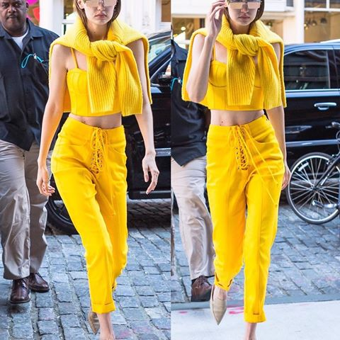
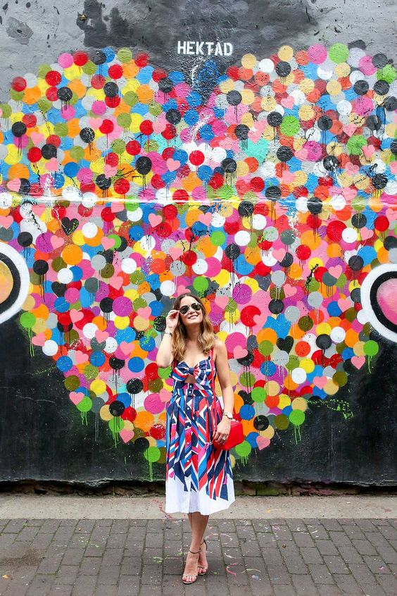

Psychology: Color
Does color affect your mood? Psychologists have said "Absolutely!" to that question for a very long time. The psychological effects of color have such an underpinning in research that the findings of chromology, the psychology of color, are used in designing everything from hotel rooms to cereal....
Color also really affects fashion and how we see each other!! In one experiment, researchers photographed people in different colored clothes and then asked participants to rate the attractiveness of people in the resulting photos. They found that the color of clothing affects the way in which men rate both males' and females' attractiveness, and how women rate men's attractiveness. Interestingly however, clothing color did not influence women's judgement of other females.
This brings us to the question: which colors are viewed as attractive?
Roberts and his fellow researchers found that red clothes would tend to lead participants to rate subjects more favorably in terms of attractiveness compared to when they wore clothes of other colors.
This result might explain the findings of a study which found that, when waitresses wore different colored t-shirts whilst serving in a restaurant, men would tend to leave higher tips for those wearing red tops than those with t-shirts of other colors. However, shirt color had no effect on the tips left by female customers.
